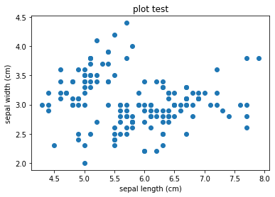
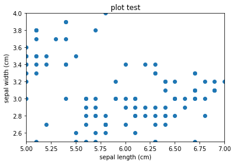
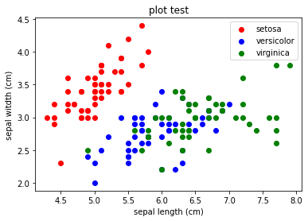
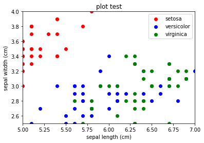

散布図の作成#
定番のirisを使って作成します。
import pandas as pd
from sklearn.datasets import load_iris
iris = load_iris()
df = pd.DataFrame(iris.data, columns=iris.feature_names)
df['target'] = iris.target
df.loc[df['target'] == 0, 'target'] = 'setosa'
df.loc[df['target'] == 1, 'target'] = 'versicolor'
df.loc[df['target'] == 2, 'target'] = 'virginica'
df
| sepal length (cm) | sepal width (cm) | petal length (cm) | petal width (cm) | target | |
|---|---|---|---|---|---|
| 0 | 5.1 | 3.5 | 1.4 | 0.2 | setosa |
| 1 | 4.9 | 3.0 | 1.4 | 0.2 | setosa |
| 2 | 4.7 | 3.2 | 1.3 | 0.2 | setosa |
| 3 | 4.6 | 3.1 | 1.5 | 0.2 | setosa |
| 4 | 5.0 | 3.6 | 1.4 | 0.2 | setosa |
| ... | ... | ... | ... | ... | ... |
| 145 | 6.7 | 3.0 | 5.2 | 2.3 | virginica |
| 146 | 6.3 | 2.5 | 5.0 | 1.9 | virginica |
| 147 | 6.5 | 3.0 | 5.2 | 2.0 | virginica |
| 148 | 6.2 | 3.4 | 5.4 | 2.3 | virginica |
| 149 | 5.9 | 3.0 | 5.1 | 1.8 | virginica |
150 rows × 5 columns
pyplotをインポートします。
from matplotlib import pyplot as plt
図の作成方法は、以下の2通りのものがよく使われます。
(1)pyplotだけで作成するもの
(2)オブジェクト指向的に作成するもの(axをつかうやつ)
pyplotだけで図を作成することは可能ですが、オブジェクト指向的に作成する方が色々細かい加工ができるため、こちらにも慣れておくことをオススメします。
(1)pyplotだけで作成するもの
subplot()で図の配置等を指定します。まずはカッコ内は空でつくりましょう。
scatter(x軸データ, y軸データ)で散布図を作成します。
xlabel()、ylabel()で座標のラベルを出力します。
title()で図のタイトルを出力します。
show()で作成した図を表示します。
plt.subplot()
plt.scatter(df['sepal length (cm)'], df['sepal width (cm)'])
plt.xlabel('sepal length (cm)')
plt.ylabel('sepal width (cm)')
plt.title('plot test')
plt.show()

表示範囲を変更したい場合は、xlim() ylim()を使用します。
カッコ内に表示したい範囲をカンマ区切りで指定します。
plt.subplot()
plt.scatter(df['sepal length (cm)'], df['sepal width (cm)'])
plt.xlabel('sepal length (cm)')
plt.ylabel('sepal width (cm)')
plt.title('plot test')
plt.xlim(5, 7) #x軸の範囲指定
plt.ylim(2.5, 4) #y軸の範囲指定
plt.show()

(2)オブジェクト指向的に作成するもの
subplots()でfigオブジェクトとaxオブジェクトを作成します。subplotsとsがついているので注意。
scatter(x軸データ, y軸データ)で散布図を作成します。
set_xlabel()、set_ylabel()で座標のラベルを出力します。
set_title()で図のタイトルを出力します。
show()で作成した図を表示します。
fig, ax = plt.subplots()
ax.scatter(df['sepal length (cm)'], df['sepal width (cm)'])
ax.set_xlabel('sepal length (cm)')
ax.set_ylabel('sepal witdth (cm)')
ax.set_title('plot test')
plt.show()
項目ごとに色を分けたい場合は、scatter()のカッコ内に、色をcolor=で、ラベル名をlabel=で指定します。
#項目ごとにデータを取得します。
df1 = df[df['target'] == 'setosa']
df2 = df[df['target'] == 'versicolor']
df3 = df[df['target'] == 'virginica']
fig, ax = plt.subplots()
#項目ごとにaxオブジェクトに順番にデータを代入する。その際に別々の色とラベル名を指定する。
ax.scatter(df1['sepal length (cm)'], df1['sepal width (cm)'], color='red', label='setosa')
ax.scatter(df2['sepal length (cm)'], df2['sepal width (cm)'], color='blue', label='versicolor')
ax.scatter(df3['sepal length (cm)'], df3['sepal width (cm)'], color='green', label='virginica')
ax.legend() #legendを出力するために必要
ax.set_xlabel('sepal length (cm)')
ax.set_ylabel('sepal witdth (cm)')
ax.set_title('plot test')
plt.show()

表示範囲を変更したい場合は、set_xlim() set_ylim()を使用します。
カッコ内に表示したい範囲をカンマ区切りで指定します。
#項目ごとにデータを取得します。
df1 = df[df['target'] == 'setosa']
df2 = df[df['target'] == 'versicolor']
df3 = df[df['target'] == 'virginica']
fig, ax = plt.subplots()
#項目ごとにaxオブジェクトに順番にデータを代入する。その際に別々の色とラベル名を指定する。
ax.scatter(df1['sepal length (cm)'], df1['sepal width (cm)'], color='red', label='setosa')
ax.scatter(df2['sepal length (cm)'], df2['sepal width (cm)'], color='blue', label='versicolor')
ax.scatter(df3['sepal length (cm)'], df3['sepal width (cm)'], color='green', label='virginica')
ax.legend() #legendを出力するために必要
ax.set_xlabel('sepal length (cm)')
ax.set_ylabel('sepal witdth (cm)')
ax.set_title('plot test')
ax.set_xlim(5, 7) #x軸の範囲指定
ax.set_ylim(2.5, 4) #y軸の範囲指定
plt.show()

練習#
setosa, versicolor, virginicaのsepal lengthの分布をbox plotで示してください。